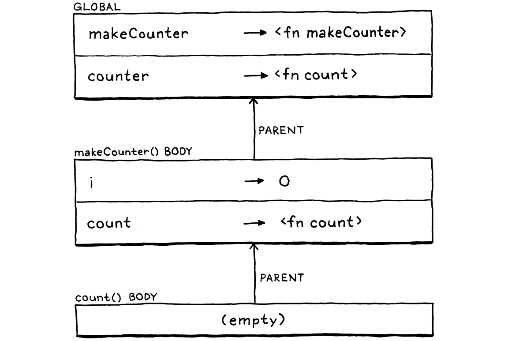

Functions
Và đó cũng là cách mà tâm trí con người vận hành — bằng cách kết hợp những ý tưởng cũ thành những cấu trúc mới, rồi những cấu trúc đó lại trở thành những ý tưởng mới có thể tiếp tục được dùng để kết hợp, cứ thế xoay vòng bất tận, ngày càng xa rời những hình ảnh gốc rễ gắn với mặt đất — thứ “đất” nuôi dưỡng mỗi ngôn ngữ.
Douglas R. Hofstadter, I Am a Strange Loop
Chương này đánh dấu sự hội tụ của rất nhiều công sức. Các chương trước đều tự thân bổ sung những tính năng hữu ích, nhưng mỗi chương cũng đóng góp một mảnh của bức tranh ghép. Giờ chúng ta sẽ lấy những mảnh đó — expression, statement, variable, control flow, và lexical scope — thêm vài mảnh mới, rồi ghép tất cả lại để hỗ trợ đầy đủ function do người dùng định nghĩa và lời gọi function.
10 . 1Function Calls
Chắc hẳn bạn đã quen với cú pháp gọi hàm kiểu C, nhưng grammar của nó tinh tế hơn bạn tưởng. Lời gọi thường là tới các hàm có tên, như:
average(1, 2);
Nhưng tên của hàm được gọi thực ra không phải là một phần của cú pháp lời gọi. Thứ được gọi — callee — có thể là bất kỳ expression nào evaluate ra một function. (Tất nhiên, nó phải là một expression có độ ưu tiên cao, nhưng dấu ngoặc đơn sẽ lo phần đó.) Ví dụ:
getCallback()();
Ở đây có hai call expression. Cặp ngoặc đơn đầu tiên có getCallback làm callee. Nhưng lời gọi thứ hai lại có toàn bộ expression getCallback() làm callee. Chính dấu ngoặc đơn theo sau một expression mới biểu thị một lời gọi hàm. Bạn có thể coi lời gọi như một dạng toán tử hậu tố bắt đầu bằng (.
“Toán tử” này có độ ưu tiên cao hơn bất kỳ toán tử nào khác, kể cả unary. Vì vậy, ta đưa nó vào grammar bằng cách để rule unary chuyển lên một rule mới là call.
unary → ( "!" | "-" ) unary | call ; call → primary ( "(" arguments? ")" )* ;
Rule này khớp một primary expression theo sau bởi không hoặc nhiều lời gọi hàm. Nếu không có ngoặc đơn, nó parse ra một primary expression thuần túy. Ngược lại, mỗi lời gọi được nhận diện bởi một cặp ngoặc đơn với danh sách argument tùy chọn bên trong. Grammar cho danh sách argument là:
arguments → expression ( "," expression )* ;
Rule này yêu cầu ít nhất một argument expression, theo sau là không hoặc nhiều expression khác, mỗi cái đứng trước bởi dấu phẩy. Để xử lý lời gọi không có argument, rule call sẽ coi toàn bộ production arguments là tùy chọn.
Tôi thừa nhận, điều này trông có vẻ cồng kềnh hơn bạn mong đợi đối với mẫu “không hoặc nhiều phần tử cách nhau bởi dấu phẩy” vốn rất phổ biến. Có những metasyntax tinh vi xử lý tốt hơn, nhưng trong BNF của chúng ta và nhiều đặc tả ngôn ngữ mà tôi từng thấy, nó vẫn khá rườm rà.
Bên phía trình sinh syntax tree, ta thêm một node mới.
"Binary : Expr left, Token operator, Expr right",
in main()
"Call : Expr callee, Token paren, List<Expr> arguments",
"Grouping : Expr expression",
Node này lưu trữ callee expression và một danh sách expression cho các argument. Nó cũng lưu token của dấu ngoặc đơn đóng. Chúng ta sẽ dùng vị trí của token đó khi báo runtime error do một lời gọi hàm gây ra.
Mở parser ra. Ở chỗ unary() trước đây nhảy thẳng sang primary(), giờ đổi thành gọi call().
return new Expr.Unary(operator, right);
}
in unary()
replace 1 line
return call();
}
Định nghĩa của nó là:
add after unary()
private Expr call() { Expr expr = primary(); while (true) { if (match(LEFT_PAREN)) { expr = finishCall(expr); } else { break; } } return expr; }
Code ở đây không hoàn toàn khớp với grammar rule. Tôi đã sắp xếp lại một chút để code gọn hơn — một trong những đặc quyền khi ta viết parser thủ công. Nhưng về cơ bản, nó khá giống cách ta parse toán tử infix. Đầu tiên, ta parse một primary expression, tức “toán hạng trái” của lời gọi. Sau đó, mỗi khi gặp (, ta gọi finishCall() để parse call expression, dùng expression đã parse trước đó làm callee. Expression trả về sẽ trở thành expr mới và ta lặp lại để xem kết quả đó có tiếp tục được gọi hay không.
Code để parse danh sách argument nằm trong helper này:
add after unary()
private Expr finishCall(Expr callee) { List<Expr> arguments = new ArrayList<>(); if (!check(RIGHT_PAREN)) { do { arguments.add(expression()); } while (match(COMMA)); } Token paren = consume(RIGHT_PAREN, "Expect ')' after arguments."); return new Expr.Call(callee, paren, arguments); }
Nó gần như là rule arguments được dịch sang code, chỉ khác là ta xử lý thêm trường hợp không có argument. Ta kiểm tra trường hợp đó trước bằng cách xem token tiếp theo có phải là ) không. Nếu đúng, ta không parse argument nào cả.
Ngược lại, ta parse một expression, rồi tìm dấu phẩy để xem có argument tiếp theo không. Ta tiếp tục làm vậy miễn là còn tìm thấy dấu phẩy sau mỗi expression. Khi không còn dấu phẩy, danh sách argument coi như xong và ta consume dấu ngoặc đơn đóng như mong đợi. Cuối cùng, ta gói callee và các argument đó vào một call AST node.
10 . 1 . 1Giới hạn số lượng argument tối đa
Hiện tại, vòng lặp parse argument của chúng ta không có giới hạn. Nếu bạn muốn gọi một hàm và truyền vào cả triệu argument, parser cũng chẳng phàn nàn gì. Vậy có nên giới hạn không?
Các ngôn ngữ khác có nhiều cách tiếp cận khác nhau. Tiêu chuẩn C quy định một implementation tuân thủ phải hỗ trợ ít nhất 127 argument cho một hàm, nhưng không nói gì về giới hạn trên. Đặc tả Java thì quy định một method có thể nhận không quá 255 argument.
Interpreter Java của Lox thực ra không cần giới hạn này, nhưng việc đặt giới hạn số argument tối đa sẽ giúp đơn giản hóa bytecode interpreter trong Phần III. Chúng ta muốn hai interpreter tương thích với nhau, kể cả trong những trường hợp “góc khuất” như thế này, nên sẽ thêm cùng một giới hạn vào jlox.
do {
in finishCall()
if (arguments.size() >= 255) { error(peek(), "Can't have more than 255 arguments."); }
arguments.add(expression());
Lưu ý rằng đoạn code này báo lỗi nếu gặp quá nhiều argument, nhưng không ném lỗi. Ném lỗi là cách chúng ta kích hoạt chế độ panic, điều mà ta muốn khi parser đang ở trạng thái rối và không biết mình đang ở đâu trong grammar nữa. Nhưng ở đây, parser vẫn ở trạng thái hoàn toàn hợp lệ — nó chỉ phát hiện quá nhiều argument. Vậy nên ta chỉ báo lỗi và tiếp tục.
10 . 1 . 2Execute lời gọi hàm
Chúng ta chưa có hàm nào để gọi, nên bắt đầu implement lời gọi trước nghe có vẻ kỳ lạ, nhưng ta sẽ tính sau. Trước hết, interpreter cần một import mới.
import java.util.ArrayList;
import java.util.List;
Như thường lệ, việc interpret bắt đầu với một visit method mới cho node call expression mới của chúng ta.
add after visitBinaryExpr()
@Override public Object visitCallExpr(Expr.Call expr) { Object callee = evaluate(expr.callee); List<Object> arguments = new ArrayList<>(); for (Expr argument : expr.arguments) { arguments.add(evaluate(argument)); } LoxCallable function = (LoxCallable)callee; return function.call(this, arguments); }
Đầu tiên, ta evaluate expression của callee. Thông thường, expression này chỉ là một identifier để tra hàm theo tên, nhưng nó có thể là bất cứ thứ gì. Sau đó, ta evaluate từng argument expression theo thứ tự và lưu các giá trị kết quả vào một list.
Khi đã có callee và các argument, việc còn lại chỉ là thực hiện lời gọi. Ta làm điều đó bằng cách cast callee sang LoxCallable rồi gọi method call() trên nó. Bất kỳ object Lox nào trong Java có thể được gọi như một hàm sẽ implement interface này. Điều đó bao gồm các hàm do người dùng định nghĩa, tất nhiên, nhưng cũng có cả class object vì class được “gọi” để tạo instance mới. Chúng ta cũng sẽ dùng nó cho một mục đích nữa ngay sau đây.
Interface mới này không có gì phức tạp.
create new file
package com.craftinginterpreters.lox; import java.util.List; interface LoxCallable { Object call(Interpreter interpreter, List<Object> arguments); }
Ta truyền interpreter vào phòng khi class implement call() cần dùng. Ta cũng đưa vào danh sách các giá trị argument đã evaluate. Nhiệm vụ của implementer là trả về giá trị mà call expression tạo ra.
10 . 1 . 3Lỗi kiểu khi gọi hàm
Trước khi implement LoxCallable, ta cần làm cho visit method này “cứng cáp” hơn một chút. Hiện tại, nó bỏ qua một vài tình huống lỗi mà ta không thể giả vờ như sẽ không xảy ra. Đầu tiên, chuyện gì xảy ra nếu callee thực ra không phải thứ có thể gọi? Nếu bạn thử làm thế này:
"totally not a function"();
String không callable trong Lox. Representation runtime của một Lox string là một Java string, nên khi ta cast nó sang LoxCallable, JVM sẽ ném ra ClassCastException. Ta không muốn interpreter “phun” ra một Java stack trace xấu xí rồi chết. Thay vào đó, ta cần tự kiểm tra kiểu trước.
}
in visitCallExpr()
if (!(callee instanceof LoxCallable)) { throw new RuntimeError(expr.paren, "Can only call functions and classes."); }
LoxCallable function = (LoxCallable)callee;
Chúng ta vẫn ném exception, nhưng giờ là exception type của riêng mình, loại mà interpreter biết cách bắt và báo lỗi một cách êm đẹp.
10 . 1 . 4Checking arity
Vấn đề tiếp theo liên quan đến arity của hàm. Arity là thuật ngữ “sang chảnh” để chỉ số lượng argument mà một hàm hoặc một phép toán mong đợi. Toán tử unary có arity bằng một, toán tử binary là hai, v.v. Với hàm, arity được xác định bởi số lượng parameter mà nó khai báo.
fun add(a, b, c) { print a + b + c; }
Hàm này định nghĩa ba parameter: a, b và c, nên arity của nó là ba và nó mong đợi ba argument. Vậy nếu bạn gọi nó như sau thì sao:
add(1, 2, 3, 4); // Quá nhiều. add(1, 2); // Quá ít.
Các ngôn ngữ khác nhau có cách tiếp cận khác nhau với vấn đề này. Tất nhiên, hầu hết các ngôn ngữ statically typed sẽ kiểm tra điều này ở compile time và từ chối compile nếu số lượng argument không khớp với arity của hàm. JavaScript thì bỏ qua bất kỳ argument thừa nào bạn truyền vào. Nếu bạn truyền thiếu, nó sẽ điền vào các parameter còn thiếu bằng giá trị “giống-null-nhưng-không-phải-null” đặc biệt là undefined. Python thì nghiêm khắc hơn: nó sẽ báo runtime error nếu danh sách argument quá ngắn hoặc quá dài.
Tôi cho rằng cách sau là tốt hơn. Truyền sai số lượng argument gần như luôn là một bug, và đây là lỗi mà tôi thực sự hay mắc phải. Vì vậy, càng sớm implementation cảnh báo tôi về điều đó thì càng tốt. Với Lox, chúng ta sẽ chọn cách của Python. Trước khi gọi callable, ta sẽ kiểm tra xem độ dài danh sách argument có khớp với arity của callable hay không.
LoxCallable function = (LoxCallable)callee;
in visitCallExpr()
if (arguments.size() != function.arity()) { throw new RuntimeError(expr.paren, "Expected " + function.arity() + " arguments but got " + arguments.size() + "."); }
return function.call(this, arguments);
Điều này đòi hỏi một method mới trong interface LoxCallable để hỏi arity của nó.
interface LoxCallable {
in interface LoxCallable
int arity();
Object call(Interpreter interpreter, List<Object> arguments);
Chúng ta có thể đẩy việc kiểm tra arity xuống phần implement cụ thể của call(). Nhưng vì sẽ có nhiều class implement LoxCallable, cách đó sẽ dẫn đến việc lặp lại logic kiểm tra ở nhiều nơi. Đưa nó lên visit method cho phép ta làm ở một chỗ duy nhất.
10 . 2Native Functions
Về lý thuyết, chúng ta có thể gọi hàm, nhưng hiện tại chưa có hàm nào để gọi. Trước khi đến với hàm do người dùng định nghĩa, đây là thời điểm tốt để giới thiệu một khía cạnh quan trọng nhưng thường bị bỏ qua trong việc implement ngôn ngữ — native function. Đây là những hàm mà interpreter cung cấp cho code của người dùng nhưng được implement bằng ngôn ngữ host (trong trường hợp của chúng ta là Java), chứ không phải ngôn ngữ đang được implement (Lox).
Đôi khi chúng còn được gọi là primitive, external function, hoặc foreign function. Vì những hàm này có thể được gọi khi chương trình của người dùng đang chạy, chúng là một phần của runtime của implementation. Nhiều sách về lập trình ngôn ngữ bỏ qua phần này vì nó không thú vị về mặt khái niệm. Chủ yếu đây là công việc “nặng nhọc”.
Nhưng khi nói đến việc khiến ngôn ngữ của bạn thực sự hữu ích, các native function mà implementation cung cấp là chìa khóa. Chúng cung cấp quyền truy cập vào các dịch vụ nền tảng mà mọi chương trình đều dựa vào. Nếu bạn không cung cấp native function để truy cập file system, người dùng sẽ gặp khó khăn lớn khi viết một chương trình đọc và hiển thị nội dung file.
Nhiều ngôn ngữ cũng cho phép người dùng tự cung cấp native function của họ. Cơ chế để làm điều đó được gọi là foreign function interface (FFI), native extension, native interface, hoặc tên tương tự. Đây là một tính năng hay vì nó giúp người implement ngôn ngữ không phải tự mình cung cấp quyền truy cập tới mọi khả năng mà nền tảng bên dưới hỗ trợ. Chúng ta sẽ không định nghĩa FFI cho jlox, nhưng sẽ thêm một native function để bạn hình dung nó trông như thế nào.
10 . 2 . 1Telling time
Khi chúng ta đến Phần III và bắt đầu xây dựng một bản implement Lox hiệu quả hơn nhiều, chúng ta sẽ đặc biệt quan tâm đến hiệu năng. Công việc tối ưu hiệu năng đòi hỏi phải đo đạc, và điều đó đồng nghĩa với benchmark. Đây là những chương trình đo thời gian cần thiết để kiểm tra một phần nào đó của interpreter.
Chúng ta có thể đo thời gian khởi động interpreter, chạy benchmark và thoát, nhưng cách đó thêm rất nhiều chi phí phụ — thời gian khởi động JVM, các tác vụ của hệ điều hành, v.v. Tất nhiên, những yếu tố đó cũng quan trọng, nhưng nếu bạn chỉ muốn kiểm chứng một tối ưu hóa ở một phần nào đó của interpreter, bạn sẽ không muốn chi phí phụ này che mờ kết quả.
Một giải pháp hay hơn là để chính script benchmark đo thời gian trôi qua giữa hai điểm trong code. Để làm được điều đó, một chương trình Lox cần có khả năng đo thời gian. Hiện tại thì không thể — bạn không thể tự “chế” một chiếc đồng hồ hữu ích nếu không truy cập được đồng hồ của máy tính.
Vì vậy, chúng ta sẽ thêm clock(), một native function trả về số giây đã trôi qua kể từ một mốc thời gian cố định. Hiệu giữa hai lần gọi liên tiếp sẽ cho bạn biết khoảng thời gian đã trôi qua. Hàm này được định nghĩa ở phạm vi global, nên hãy đảm bảo interpreter có thể truy cập nó.
class Interpreter implements Expr.Visitor<Object>,
Stmt.Visitor<Void> {
in class Interpreter
replace 1 line
final Environment globals = new Environment(); private Environment environment = globals;
void interpret(List<Stmt> statements) {
Trường environment trong interpreter sẽ thay đổi khi chúng ta vào và ra khỏi các scope cục bộ. Nó theo dõi environment hiện tại. Trường globals mới này giữ một tham chiếu cố định đến environment global ngoài cùng.
Khi khởi tạo một Interpreter, chúng ta sẽ đưa native function này vào scope global.
private Environment environment = globals;
in class Interpreter
Interpreter() { globals.define("clock", new LoxCallable() { @Override public int arity() { return 0; } @Override public Object call(Interpreter interpreter, List<Object> arguments) { return (double)System.currentTimeMillis() / 1000.0; } @Override public String toString() { return "<native fn>"; } }); }
void interpret(List<Stmt> statements) {
Điều này định nghĩa một biến tên là "clock". Giá trị của nó là một Java anonymous class implement LoxCallable. Hàm clock() không nhận argument nào, nên arity của nó là 0. Phần implement của call() sẽ gọi hàm Java tương ứng và chuyển kết quả thành giá trị double tính bằng giây.
Nếu muốn thêm các native function khác — đọc input từ người dùng, làm việc với file, v.v. — chúng ta có thể thêm mỗi hàm như một anonymous class riêng implement LoxCallable. Nhưng với cuốn sách này, chỉ cần một hàm này là đủ.
Giờ thì hãy rời khỏi “nghiệp” định nghĩa hàm và để người dùng tự lo phần đó . . .
10 . 3Function Declarations
Cuối cùng, chúng ta sẽ thêm một production mới vào rule declaration mà ta đã giới thiệu khi thêm variable. Function declaration, giống như variable, sẽ bind một tên mới. Điều đó có nghĩa là chúng chỉ được phép xuất hiện ở những nơi cho phép declaration.
declaration → funDecl | varDecl | statement ;
Rule declaration được cập nhật để tham chiếu rule mới này:
funDecl → "fun" function ; function → IDENTIFIER "(" parameters? ")" block ;
Rule funDecl chính sử dụng một helper rule riêng là function. Một function declaration statement là từ khóa fun theo sau bởi phần “function” thực sự. Khi chúng ta làm việc với class, chúng ta sẽ tái sử dụng rule function này để khai báo method. Chúng trông khá giống function declaration, nhưng không có fun ở trước.
Bản thân function là một tên, theo sau là danh sách parameter trong ngoặc đơn và phần thân. Phần thân luôn là một block trong ngoặc nhọn, dùng cùng rule grammar với block statement. Danh sách parameter dùng rule này:
parameters → IDENTIFIER ( "," IDENTIFIER )* ;
Nó giống rule arguments trước đây, chỉ khác là mỗi parameter là một identifier, không phải một expression. Đây là khá nhiều cú pháp mới để parser xử lý, nhưng AST node tạo ra thì không quá phức tạp.
"Expression : Expr expression",
in main()
"Function : Token name, List<Token> params," + " List<Stmt> body",
"If : Expr condition, Stmt thenBranch," +
Một function node có tên, danh sách parameter (tên của chúng), và phần thân. Chúng ta lưu phần thân dưới dạng danh sách statement nằm trong cặp ngoặc nhọn.
Bên phía parser, ta đưa thêm phần khai báo mới này vào.
try {
in declaration()
if (match(FUN)) return function("function");
if (match(VAR)) return varDeclaration();
Giống như các statement khác, một function được nhận diện bởi từ khóa ở đầu. Khi gặp fun, ta gọi function. Điều này tương ứng với rule function trong grammar vì ta đã match và consume từ khóa fun. Chúng ta sẽ xây dựng method này từng bước, bắt đầu với:
add after expressionStatement()
private Stmt.Function function(String kind) { Token name = consume(IDENTIFIER, "Expect " + kind + " name."); }
Hiện tại, nó chỉ consume token identifier cho tên hàm. Bạn có thể thắc mắc về tham số kind nhỏ bé kia. Cũng như việc ta tái sử dụng grammar rule, sau này ta sẽ tái sử dụng method function() để parse method bên trong class. Khi đó, ta sẽ truyền vào "method" cho kind để thông báo lỗi cụ thể hơn cho loại khai báo đang được parse.
Tiếp theo, ta parse danh sách parameter và cặp ngoặc đơn bao quanh nó.
Token name = consume(IDENTIFIER, "Expect " + kind + " name.");
in function()
consume(LEFT_PAREN, "Expect '(' after " + kind + " name."); List<Token> parameters = new ArrayList<>(); if (!check(RIGHT_PAREN)) { do { if (parameters.size() >= 255) { error(peek(), "Can't have more than 255 parameters."); } parameters.add( consume(IDENTIFIER, "Expect parameter name.")); } while (match(COMMA)); } consume(RIGHT_PAREN, "Expect ')' after parameters.");
}
Phần này giống code xử lý argument trong lời gọi hàm, chỉ khác là không tách ra thành helper method. if bên ngoài xử lý trường hợp không có parameter, và vòng lặp while bên trong parse các parameter miễn là còn tìm thấy dấu phẩy để phân tách. Kết quả là danh sách token cho tên từng parameter.
Giống như với argument của lời gọi hàm, ta kiểm tra ngay tại thời điểm parse để đảm bảo bạn không vượt quá số lượng parameter tối đa mà một hàm được phép có.
Cuối cùng, ta parse phần thân và gói tất cả lại thành một function node.
consume(RIGHT_PAREN, "Expect ')' after parameters.");
in function()
consume(LEFT_BRACE, "Expect '{' before " + kind + " body.");
List<Stmt> body = block();
return new Stmt.Function(name, parameters, body);
}
Lưu ý rằng ta consume dấu { ở đầu phần thân tại đây trước khi gọi block(). Lý do là block() giả định token ngoặc nhọn đã được match. Consume nó ở đây cho phép ta báo lỗi chính xác hơn nếu không tìm thấy {, vì ta biết nó đang ở ngữ cảnh của một function declaration.
10 . 4Function Objects
Chúng ta đã parse xong cú pháp, thường thì giờ là lúc interpret, nhưng trước hết cần nghĩ cách biểu diễn một Lox function trong Java. Ta cần lưu trữ parameter để bind chúng với giá trị argument khi hàm được gọi. Và tất nhiên, ta cần lưu code của phần thân để execute.
Về cơ bản, đó chính là class Stmt.Function. Liệu ta có thể dùng luôn nó? Gần như được, nhưng chưa đủ. Ta còn cần một class implement LoxCallable để có thể gọi nó. Ta không muốn pha trộn giai đoạn runtime của interpreter vào các class cú pháp của front end, nên không để Stmt.Function tự implement. Thay vào đó, ta bọc nó trong một class mới.
create new file
package com.craftinginterpreters.lox; import java.util.List; class LoxFunction implements LoxCallable { private final Stmt.Function declaration; LoxFunction(Stmt.Function declaration) { this.declaration = declaration; } }
Ta implement call() của LoxCallable như sau:
add after LoxFunction()
@Override public Object call(Interpreter interpreter, List<Object> arguments) { Environment environment = new Environment(interpreter.globals); for (int i = 0; i < declaration.params.size(); i++) { environment.define(declaration.params.get(i).lexeme, arguments.get(i)); } interpreter.executeBlock(declaration.body, environment); return null; }
Vài dòng code này là một trong những phần nền tảng và mạnh mẽ nhất của interpreter. Như ta đã thấy trong chương về statement và state, quản lý environment của tên là một phần cốt lõi của việc implement ngôn ngữ. Function gắn chặt với điều đó.
Parameter là cốt lõi của function, đặc biệt ở chỗ một function đóng gói các parameter của nó — không code nào bên ngoài function có thể thấy chúng. Điều này có nghĩa là mỗi function có environment riêng để lưu các biến đó.
Hơn nữa, environment này phải được tạo động. Mỗi lời gọi function có environment riêng. Nếu không, recursion sẽ hỏng. Nếu có nhiều lời gọi cùng lúc tới cùng một function, mỗi lời gọi cần environment riêng, dù tất cả đều gọi cùng một function.
Ví dụ, đây là một cách vòng vèo để đếm tới ba:
fun count(n) { if (n > 1) count(n - 1); print n; } count(3);
Hãy tưởng tượng ta dừng interpreter ngay tại điểm chuẩn bị in ra 1 trong lời gọi lồng nhau sâu nhất. Các lời gọi bên ngoài in 2 và 3 vẫn chưa in, nên chắc chắn đâu đó trong bộ nhớ vẫn còn các environment lưu rằng n được bind với 3 ở một context, 2 ở context khác, và 1 ở context trong cùng, như:
Đó là lý do ta tạo environment mới ở mỗi lời gọi, không phải ở khai báo function. Method call() mà ta vừa thấy làm điều đó. Ngay khi bắt đầu lời gọi, nó tạo environment mới. Sau đó, nó duyệt song song danh sách parameter và argument. Với mỗi cặp, nó tạo biến mới với tên parameter và bind nó với giá trị argument.
Với chương trình như sau:
fun add(a, b, c) { print a + b + c; } add(1, 2, 3);
Tại thời điểm gọi add(), interpreter tạo ra thứ như thế này:

Sau đó, call() yêu cầu interpreter execute phần thân của function trong environment cục bộ mới này. Trước đó, environment hiện tại là environment nơi function được gọi. Giờ, ta “dịch chuyển” vào không gian parameter mới tạo cho function.
Đây là tất cả những gì cần để truyền dữ liệu vào function. Bằng cách dùng environment khác nhau khi execute phần thân, các lời gọi cùng một function với cùng code có thể cho ra kết quả khác nhau.
Khi phần thân function execute xong, executeBlock() loại bỏ environment cục bộ đó và khôi phục environment trước đó đang hoạt động tại callsite. Cuối cùng, call() trả về null, tức là nil cho caller. (Chúng ta sẽ thêm giá trị trả về sau.)
Về mặt cơ học, code này khá đơn giản: duyệt vài danh sách, bind vài biến mới, gọi một method. Nhưng đây chính là lúc đoạn code tinh thể của function declaration trở thành một lời gọi sống động. Đây là một trong những đoạn tôi yêu thích nhất trong cả cuốn sách. Nếu muốn, bạn có thể dành chút thời gian để “thiền” về nó.
Xong chưa? OK. Lưu ý rằng khi bind parameter, ta giả định danh sách parameter và argument có cùng độ dài. Điều này an toàn vì visitCallExpr() đã kiểm tra arity trước khi gọi call(). Nó dựa vào việc function báo lại arity của mình để làm điều đó.
add after LoxFunction()
@Override public int arity() { return declaration.params.size(); }
Đó là hầu hết phần biểu diễn object của chúng ta. Nhân tiện, ta cũng implement luôn toString().
add after LoxFunction()
@Override public String toString() { return "<fn " + declaration.name.lexeme + ">"; }
Điều này giúp output đẹp hơn nếu người dùng in ra giá trị function.
fun add(a, b) { print a + b; } print add; // "<fn add>".
10 . 4 . 1Interpreting function declarations
Chúng ta sẽ quay lại và tinh chỉnh LoxFunction sau, nhưng bấy nhiêu là đủ để bắt đầu. Giờ ta có thể visit một function declaration.
add after visitExpressionStmt()
@Override public Void visitFunctionStmt(Stmt.Function stmt) { LoxFunction function = new LoxFunction(stmt); environment.define(stmt.name.lexeme, function); return null; }
Điều này tương tự như cách ta interpret các literal expression khác. Ta lấy một syntax node của function — tức là biểu diễn ở compile-time của function — và chuyển nó thành biểu diễn ở runtime. Ở đây, đó là một LoxFunction bao bọc syntax node này.
Function declaration khác với các literal node khác ở chỗ nó cũng bind object kết quả vào một biến mới. Vậy nên, sau khi tạo LoxFunction, ta tạo một binding mới trong environment hiện tại và lưu tham chiếu tới nó ở đó.
Với điều này, ta có thể define và call function của riêng mình ngay trong Lox. Thử xem:
fun sayHi(first, last) { print "Hi, " + first + " " + last + "!"; } sayHi("Dear", "Reader");
Không biết bạn thế nào, chứ với tôi thì trông nó đã giống một ngôn ngữ lập trình “thứ thiệt” rồi đấy.
10 . 5Return Statements
Chúng ta có thể đưa dữ liệu vào function bằng cách truyền parameter, nhưng hiện chưa có cách nào để lấy kết quả trả ra out. Nếu Lox là một ngôn ngữ định hướng expression như Ruby hoặc Scheme, phần thân sẽ là một expression mà giá trị của nó ngầm định là kết quả của function. Nhưng trong Lox, phần thân của function là một danh sách statement không tạo ra giá trị, nên ta cần cú pháp riêng để trả về kết quả. Nói cách khác, là câu lệnh return. Tôi chắc bạn đã đoán được grammar rồi.
statement → exprStmt | forStmt | ifStmt | printStmt | returnStmt | whileStmt | block ; returnStmt → "return" expression? ";" ;
Chúng ta có thêm một production nữa — thực tế là production cuối cùng — trong rule statement lâu đời. Một return statement là từ khóa return theo sau bởi một expression tùy chọn và kết thúc bằng dấu chấm phẩy.
Giá trị trả về là tùy chọn để hỗ trợ việc thoát sớm khỏi một function không trả về giá trị hữu ích. Trong các ngôn ngữ statically typed, hàm “void” không trả về giá trị, còn hàm non-void thì có. Vì Lox là dynamically typed, không có hàm void thực sự. Compiler không thể ngăn bạn lấy giá trị trả về của một call tới function không chứa câu lệnh return.
fun procedure() { print "don't return anything"; } var result = procedure(); print result; // ?
Điều này có nghĩa là mọi function trong Lox đều phải trả về một thứ gì đó, ngay cả khi nó không chứa câu lệnh return nào. Chúng ta dùng nil cho trường hợp này, đó là lý do implement call() của LoxFunction trả về null ở cuối. Tương tự, nếu bạn bỏ qua giá trị trong câu lệnh return, ta sẽ coi nó tương đương với:
return nil;
Bên phía AST generator, ta thêm một node mới.
"Print : Expr expression",
in main()
"Return : Token keyword, Expr value",
"Var : Token name, Expr initializer",
Node này giữ token từ khóa return để ta có thể dùng vị trí của nó khi báo lỗi, và giá trị được trả về (nếu có). Ta parse nó giống như các statement khác, bắt đầu bằng việc nhận diện từ khóa mở đầu.
if (match(PRINT)) return printStatement();
in statement()
if (match(RETURN)) return returnStatement();
if (match(WHILE)) return whileStatement();
Từ đó rẽ nhánh sang:
add after printStatement()
private Stmt returnStatement() { Token keyword = previous(); Expr value = null; if (!check(SEMICOLON)) { value = expression(); } consume(SEMICOLON, "Expect ';' after return value."); return new Stmt.Return(keyword, value); }
Sau khi lấy token return đã được consume trước đó, ta tìm một expression cho giá trị trả về. Vì có rất nhiều token khác nhau có thể bắt đầu một expression, nên khó để biết chắc là có giá trị trả về hay không. Thay vào đó, ta kiểm tra xem nó vắng mặt. Vì dấu chấm phẩy không thể bắt đầu một expression, nếu token tiếp theo là dấu chấm phẩy, ta biết chắc là không có giá trị nào.
10 . 5 . 1Returning from calls
Việc interpret một câu lệnh return khá phức tạp. Bạn có thể return từ bất kỳ đâu trong phần thân của function, thậm chí sâu bên trong các statement khác. Khi return được execute, interpreter cần nhảy ra khỏi toàn bộ context hiện tại và khiến function call kết thúc, giống như một dạng control flow “tăng lực” nào đó.
Ví dụ, giả sử chúng ta đang chạy chương trình này và chuẩn bị execute câu lệnh return:
fun count(n) { while (n < 100) { if (n == 3) return n; // <-- print n; n = n + 1; } } count(1);
Java call stack lúc này trông đại khái như sau:
Interpreter.visitReturnStmt() Interpreter.visitIfStmt() Interpreter.executeBlock() Interpreter.visitBlockStmt() Interpreter.visitWhileStmt() Interpreter.executeBlock() LoxFunction.call() Interpreter.visitCallExpr()
Chúng ta cần đi từ đỉnh stack quay lại tận call(). Không biết bạn thế nào, chứ với tôi thì điều này nghe rất giống việc dùng exception. Khi execute một câu lệnh return, chúng ta sẽ dùng exception để “tháo” interpreter ra khỏi tất cả các visit method của những statement bao quanh, quay lại đoạn code bắt đầu execute phần thân.
Visit method cho AST node mới của chúng ta trông như sau:
add after visitPrintStmt()
@Override public Void visitReturnStmt(Stmt.Return stmt) { Object value = null; if (stmt.value != null) value = evaluate(stmt.value); throw new Return(value); }
Nếu có giá trị trả về, ta evaluate nó, nếu không thì dùng nil. Sau đó, ta lấy giá trị này, bọc nó trong một custom exception class và ném ra.
create new file
package com.craftinginterpreters.lox; class Return extends RuntimeException { final Object value; Return(Object value) { super(null, null, false, false); this.value = value; } }
Class này bọc giá trị trả về cùng với những thứ Java yêu cầu cho một runtime exception class. Lời gọi constructor cha với các tham số null và false kia sẽ vô hiệu hóa một số cơ chế của JVM mà ta không cần. Vì chúng ta dùng exception class này cho mục đích control flow chứ không phải xử lý lỗi thực sự, nên ta không cần những chi phí phụ như stack trace.
Chúng ta muốn việc này “tháo” ra đến tận nơi function call bắt đầu, tức method call() trong LoxFunction.
arguments.get(i));
}
in call()
replace 1 line
try { interpreter.executeBlock(declaration.body, environment); } catch (Return returnValue) { return returnValue.value; }
return null;
Ta bọc lời gọi executeBlock() trong một khối try-catch. Khi bắt được return exception, ta lấy giá trị bên trong và dùng nó làm giá trị trả về từ call(). Nếu không bắt được exception nào, nghĩa là function đã chạy đến cuối phần thân mà không gặp câu lệnh return. Khi đó, nó ngầm định trả về nil.
Hãy thử xem. Giờ chúng ta đã đủ sức để hỗ trợ ví dụ kinh điển này — một function đệ quy tính số Fibonacci:
fun fib(n) { if (n <= 1) return n; return fib(n - 2) + fib(n - 1); } for (var i = 0; i < 20; i = i + 1) { print fib(i); }
Chương trình nhỏ này sử dụng gần như mọi tính năng ngôn ngữ mà chúng ta đã implement trong nhiều chương vừa qua — expression, phép toán số học, rẽ nhánh, vòng lặp, biến, function, function call, parameter binding, và return.
10 . 6Local Functions & Closures
Các function của chúng ta giờ đã khá đầy đủ tính năng, nhưng vẫn còn một lỗ hổng cần vá. Thực tế, đây là một khoảng trống đủ lớn để chúng ta sẽ dành phần lớn chương tiếp theo để xử lý triệt để, nhưng ngay bây giờ ta có thể bắt đầu.
Phần implement call() của LoxFunction sẽ tạo một environment mới để bind các parameter của function. Khi tôi cho bạn xem đoạn code đó, tôi đã lướt qua một điểm quan trọng: parent của environment đó là gì?
Hiện tại, nó luôn là globals, tức environment global ngoài cùng. Nhờ vậy, nếu một identifier không được định nghĩa bên trong phần thân function, interpreter có thể tìm ra nó ở phạm vi global bên ngoài function. Trong ví dụ Fibonacci, đây là cách interpreter tìm được lời gọi đệ quy tới fib ngay trong phần thân của chính function đó — fib là một biến global.
Nhưng hãy nhớ rằng trong Lox, function declaration được phép xuất hiện bất cứ nơi nào một tên có thể được bind. Điều này bao gồm cả cấp cao nhất của script Lox, nhưng cũng có thể nằm bên trong block hoặc bên trong function khác. Lox hỗ trợ local function được định nghĩa bên trong một function khác, hoặc lồng trong một block.
Xem ví dụ kinh điển này:
fun makeCounter() { var i = 0; fun count() { i = i + 1; print i; } return count; } var counter = makeCounter(); counter(); // "1". counter(); // "2".
Ở đây, count() sử dụng i, biến này được khai báo bên ngoài nó, trong function chứa nó là makeCounter(). makeCounter() trả về một tham chiếu tới function count() rồi phần thân của nó kết thúc hoàn toàn.
Trong khi đó, code ở cấp cao nhất gọi function count() được trả về. Điều này execute phần thân của count(), vốn gán và đọc i, mặc dù function nơi i được định nghĩa đã thoát.
Nếu bạn chưa từng gặp ngôn ngữ có nested function, điều này có thể nghe hơi “điên rồ”, nhưng người dùng mong nó hoạt động. Tiếc là, nếu chạy ngay bây giờ, bạn sẽ nhận lỗi undefined variable khi gọi counter() và phần thân count() cố tìm i. Nguyên nhân là vì chuỗi environment lúc này trông như sau:

Khi ta call count() (thông qua tham chiếu được lưu trong counter), ta tạo một environment trống mới cho phần thân function. Parent của nó là environment global. Chúng ta đã mất environment của makeCounter() nơi i được bind.
Hãy quay ngược thời gian một chút. Đây là chuỗi environment ngay khi ta khai báo count() bên trong phần thân makeCounter():

Tại thời điểm function được khai báo, ta có thể thấy i. Nhưng khi return khỏi makeCounter() và thoát phần thân của nó, interpreter loại bỏ environment đó. Vì interpreter không giữ lại environment bao quanh count(), nên chính function object phải tự giữ nó.
Cấu trúc dữ liệu này được gọi là closure vì nó “đóng” (close over) và giữ lại các biến bao quanh nơi function được khai báo. Closure đã tồn tại từ thời kỳ đầu của Lisp, và các lập trình viên ngôn ngữ đã nghĩ ra đủ cách để implement chúng. Với jlox, ta sẽ làm cách đơn giản nhất mà vẫn hoạt động. Trong LoxFunction, ta thêm một field để lưu environment.
private final Stmt.Function declaration;
in class LoxFunction
private final Environment closure;
LoxFunction(Stmt.Function declaration) {
Ta khởi tạo nó trong constructor.
constructor LoxFunction()
replace 1 line
LoxFunction(Stmt.Function declaration, Environment closure) { this.closure = closure;
this.declaration = declaration;
Khi tạo một LoxFunction, ta sẽ capture environment hiện tại.
public Void visitFunctionStmt(Stmt.Function stmt) {
in visitFunctionStmt()
replace 1 line
LoxFunction function = new LoxFunction(stmt, environment);
environment.define(stmt.name.lexeme, function);
Đây là environment đang hoạt động khi function được khai báo, không phải khi nó được call, và đó chính là điều ta muốn. Nó đại diện cho lexical scope bao quanh function declaration. Cuối cùng, khi ta call function, ta dùng environment này làm parent cho call thay vì trỏ thẳng tới globals.
List<Object> arguments) {
in call()
replace 1 line
Environment environment = new Environment(closure);
for (int i = 0; i < declaration.params.size(); i++) {
Điều này tạo ra một chuỗi environment từ phần thân function đi ra qua các environment nơi function được khai báo, cho tới global scope. Chuỗi environment ở runtime khớp với cấu trúc lồng nhau của source code như ta mong muốn. Kết quả cuối cùng khi ta call function đó trông như sau:
Giờ thì, như bạn thấy, interpreter vẫn có thể tìm i khi cần vì nó nằm ở giữa chuỗi environment. Hãy thử chạy lại ví dụ makeCounter(). Nó hoạt động rồi!
Function cho phép chúng ta trừu tượng hóa, tái sử dụng và kết hợp code. Lox giờ đã mạnh mẽ hơn nhiều so với chiếc máy tính số học sơ khai ban đầu. Tiếc là, trong lúc vội vàng nhét closure vào, chúng ta đã để lọt một chút dynamic scoping vào interpreter. Trong chương tiếp theo, chúng ta sẽ khám phá sâu hơn về lexical scope và bịt kín lỗ hổng đó.
10 . 7Thử thách
-
Interpreter của chúng ta cẩn thận kiểm tra xem số lượng argument được truyền vào một function có khớp với số lượng parameter mà nó mong đợi hay không. Vì việc kiểm tra này được thực hiện ở runtime cho mỗi lần call, nó sẽ có chi phí hiệu năng. Các implementation của Smalltalk lại không gặp vấn đề này. Tại sao vậy?
-
Cú pháp function declaration của Lox thực hiện hai thao tác độc lập. Nó tạo ra một function và đồng thời bind nó với một tên. Điều này cải thiện khả năng sử dụng cho trường hợp phổ biến khi bạn muốn gắn một tên với function.
Nhưng trong code theo phong cách functional, bạn thường muốn tạo một function để truyền ngay cho một function khác hoặc return nó. Trong trường hợp đó, nó không cần tên.Các ngôn ngữ khuyến khích phong cách functional thường hỗ trợ anonymous function hoặc lambda — một cú pháp expression tạo ra function mà không bind nó với tên. Hãy thêm cú pháp anonymous function vào Lox để đoạn code này hoạt động:
fun thrice(fn) { for (var i = 1; i <= 3; i = i + 1) { fn(i); } } thrice(fun (a) { print a; }); // "1". // "2". // "3".
Bạn sẽ xử lý thế nào với trường hợp khó khi một anonymous function expression xuất hiện trong một expression statement:
fun () {}; -
Chương trình này có hợp lệ không?
fun scope(a) { var a = "local"; }
Nói cách khác, parameter của một function có nằm trong cùng scope với các biến local của nó, hay ở một scope bên ngoài? Lox xử lý thế nào? Còn các ngôn ngữ khác mà bạn biết thì sao? Theo bạn, một ngôn ngữ nên làm gì?